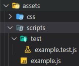
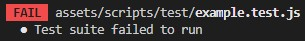
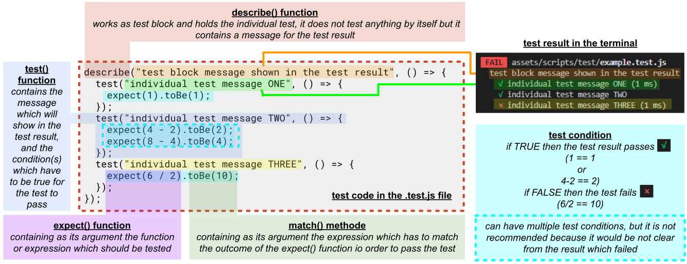
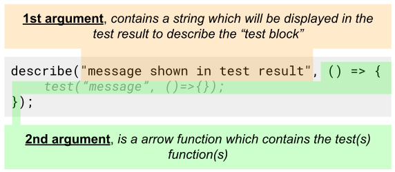
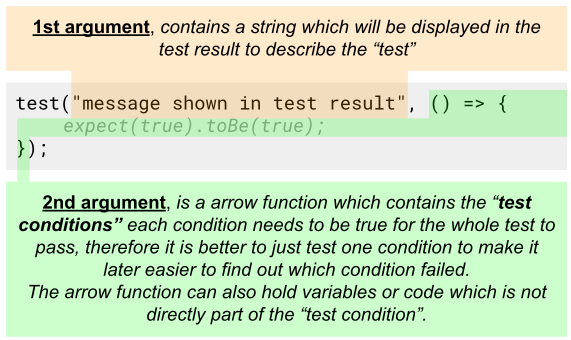
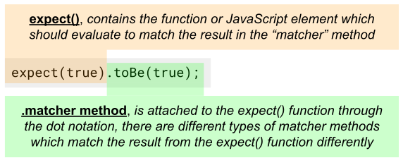
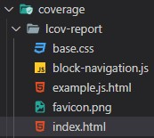

Jest
Jest is a Javascript Testing framework built by Facebook. It is primarily designed for React based apps but could be used to write automation scenarios for any Javascript-based codebase.
Setting up the project
- As with every JavaScript project you'll need an NPM environment (make sure to have Node installed on
your system). Create a new folder and initialize the project with:
npm init -y - install Jest with:
npm i jest --save-dev - Configure the NPM script for running our tests from the command line. Open up the
package.json*
and configure under "scripts" the key "test" with the value "jest" :
... "scripts": { "test": "jest" }, ... -
 create a folder (e.g. "test" or "__test__") in the JavaScript directory of your project,
create a file with the same name as the JavaScript file you want to test in that folder except that you also include .test before the .js extension (marks them as test file(s)) -
add following comment to the top of every .test.js file (to identify them as test
files):
/** * @jest-environment jsdom */
-
export every single function, object, array, global variable which should be tested from the original
JavaScript file by adding following code to the bottom:
module.exports = { FUNCTION_1, OBJECT_6, ARRAY_2, VARIABLE }; -
import every single function, object, array, global variable which should be tested to the
.test.js file by adding following code at the top after the comment:
/** * @jest-environment jsdom */ const { FUNCTION_1, OBJECT_6, ARRAY_2, VARIABLE } = require("../example");
(in the code above , the data is imported from one level up../and theexamplefile (without .js), the path is relative from where the test file is to the file where are the functions, ... imported from) - to run a test from the command line use following command:
npm test -
if you run the "test" but get an error message
Test suit failed to run, that means that the data which should be tested is not correctly connected to the test script, check if the path is correctrequire("../example")
writing a test
-
describe()function block:
 The describe() function contains the individual test. It is used to group the test(s) together in the "test code" and in the "test results" where its "message" will appear. It is optional to use the describe() function, because the test work without it but it helps to structure and organize the test better.
test()function:
 The test() function contains the condition or conditions which all need to evaluate to true for the function to pass in the test result. It can also contain code which is not directly part of the condition like functions, variable declarations, ... .
- test condition
 The "test condition" matches the outcome of the expect() function with the outcome of the "matcher" method. Only if both results evaluate to true the "test" passes. the expect function returns the result of the expression which has been passed as an argument. There are different type of "matcher" methods.
"matcher" methods
| "matcher" methods | description |
|---|---|
| Common Matchers | |
.not |
Tests the opposite of a matcher, by putting it in front of the matcher. (e.g.
.not.toBe())example:test('adding positive numbers is not zero', () => {
for (let a = 1; a < 10; a++) {
for (let b = 1; b < 10; b++) {
expect(a + b).not.toBe(0);
}
}
});
|
.toBe() |
toBe uses Object.is to test "exact equality"two values are the same if one of the following holds:
examples of "exact equality"// Case 1: Evaluation result is the same as using ===
Object.is(25, 25); // true
Object.is('foo', 'foo'); // true
Object.is('foo', 'bar'); // false
Object.is(null, null); // true
Object.is(undefined, undefined); // true
Object.is(window, window); // true
Object.is([], []); // false
var foo = { a: 1 };
var bar = { a: 1 };
Object.is(foo, foo); // true
Object.is(foo, bar); // false
// Case 2: Signed zero
Object.is(0, -0); // false
Object.is(+0, -0); // false
Object.is(-0, -0); // true
Object.is(0n, -0n); // true
// Case 3: NaN
Object.is(NaN, 0/0); // true
Object.is(NaN, Number.NaN) // true
|
.toEqual() |
checks the value of an object or array by recursively checking every field of an object or
arrayexample:test('object assignment', () => {
const data = {one: 1};
data['two'] = 2;
expect(data).toEqual({one: 1, two: 2});
});
|
| Truthiness | |
.toBeNull() |
matches only null |
.toBeUndefined() |
matches only undefined |
.toBeDefined() |
is the opposite of toBeUndefined |
.toBeTruthy() |
matches anything that an if statement treats as true |
.toBeFalsy() |
matches anything that an if statement treats as false |
.toBeGreaterThan() or .toBeLessThan() |
for number value comparisons |
.toMatch() |
accepts a Regex pattern to match a string output |
.toContain() |
can be used to see if a value is contained in an Array |
| Numbers | |
.toBeCloseTo() |
For floating point equality, use toBeCloseTo instead of toEqual, because
you don't want
a test to depend on a tiny rounding error.example:test('adding floating point numbers', () => {
const value = 0.1 + 0.2;
//expect(value).toBe(0.3); This won't work because of rounding error
expect(value).toBeCloseTo(0.3); // This works.
});
|
| Strings | |
.toMatch() |
Checks strings against regular expressions.example:test('there is no I in team', () => {
expect('team').not.toMatch(/I/);
});
test('but there is a "stop" in Christoph', () => {
expect('Christoph').toMatch(/stop/);
});
|
| Arrays and iterables | |
.toContain() |
Checks if an array or iterable contains a particular item.example:const shoppingList = [
'diapers',
'kleenex',
'trash bags',
'paper towels',
'milk',
];
test('the shopping list has milk on it', () => {
expect(shoppingList).toContain('milk');
expect(new Set(shoppingList)).toContain('milk');
});
|
| Exceptions | |
.toThrow() |
Tests whether a particular function throws an error when it's called.example:function compileAndroidCode() {
throw new Error('you are using the wrong JDK');
}
test('compiling android goes as expected', () => {
expect(() => compileAndroidCode()).toThrow();
expect(() => compileAndroidCode()).toThrow(Error);
// You can also use the exact error message or a regexp
expect(() => compileAndroidCode()).toThrow('you are using the wrong JDK');
expect(() => compileAndroidCode()).toThrow(/JDK/);
});
|
extended test result
- Configure the NPM script for running our tests from the command line. Open up the
package.json*
and change under "scripts" the key "test" with the value "jest --coverage" :
... "scripts": { "test": "jest --coverage" }, ... -
run the test from the command line
npm test -
a new folder has been created, look in the root directory of your project for the path coverage/lcov-report/index.html to find and open the newly created index.html
how to load an html file for the test into the dom
- add following code to the beginning of your test file:
beforeAll( () => { let fs = require("fs"); //fs is part of the node standard library let fileContents = fs.readFileSync("index.html", "utf-8"); document.open(); document.write(fileContents); document.close; });"index.html" can be replaced with any other html file name which should be loaded before the test into the DOM
- the html file exists now in the DOM and can be manipulated from within the test file even before a test
is run
describe("test block message shown in the test result", () => { beforeAll( () => { game.score = 42; //set the value to 42 of the "score" key on the "game" object newGame(42); //calls the "newGame" function }); test("individual test message ONE", () => { expect(1).toBe(1); }); });
Setup and Teardown
Often while writing tests you have some setup work that needs to happen before tests run, and you have some finishing work that needs to happen after tests run. Jest provides helper functions to handle this.
Repeating Setup For Many Tests
If you have some work you need to do repeatedly for many tests, you can use
beforeEach and afterEach.
Functions within beforeEach and
afterEach which are prefixed with return, can return a "promise".
example:
For example, let's say that several tests interact with a database of cities. You have a method initializeCityDatabase() that must be called before each of these tests, and a method clearCityDatabase() that must be called after each of these tests. You can do this with:
beforeEach(() => {
initializeCityDatabase();
});
afterEach(() => {
clearCityDatabase();
});
test('city database has Vienna', () => {
expect(isCity('Vienna')).toBeTruthy();
});
test('city database has San Juan', () => {
expect(isCity('San Juan')).toBeTruthy();
});
beforeEach and afterEach can handle asynchronous code in the same ways that tests can handle asynchronous code - they can either take a done parameter or return a promise. For example, if initializeCityDatabase() returned a promise that resolved when the database was initialized, we would want to return that promise:
beforeEach(() => {
return initializeCityDatabase();
});
One-Time Setup
In some cases, you only need to do setup once, at the beginning of a file. This can be
especially bothersome when the setup is asynchronous, so you can't do it inline. Jest provides
beforeAll and afterAll to handle this situation.
example:
For example, if both initializeCityDatabase and clearCityDatabase returned promises, and the city database could be reused between tests, we could change our test code to:
beforeAll(() => {
return initializeCityDatabase();
});
afterAll(() => {
return clearCityDatabase();
});
test('city database has Vienna', () => {
expect(isCity('Vienna')).toBeTruthy();
});
test('city database has San Juan', () => {
expect(isCity('San Juan')).toBeTruthy();
});
Scoping
By default, the beforeAll and afterAll blocks apply to every test
in a file. You can also group tests together using a describe block. When they are inside a describe block,
the beforeAll and afterAll blocks only apply to the tests within that describe
block.
example:
For example, let's say we had not just a city database, but also a food database. We could do different setup for different tests:
// Applies to all tests in this file
beforeEach(() => {
return initializeCityDatabase();
});
test('city database has Vienna', () => {
expect(isCity('Vienna')).toBeTruthy();
});
test('city database has San Juan', () => {
expect(isCity('San Juan')).toBeTruthy();
});
describe('matching cities to foods', () => {
// Applies only to tests in this describe block
beforeEach(() => {
return initializeFoodDatabase();
});
test('Vienna < 3 veal', () => {
expect(isValidCityFoodPair('Vienna', 'Wiener Schnitzel')).toBe(true);
});
test('San Juan < 3 plantains', () => {
expect(isValidCityFoodPair('San Juan', 'Mofongo')).toBe(true);
});
});
Note that the top-level beforeEach is executed before the beforeEach inside the describe block. It may help to illustrate the order of execution of all hooks.
beforeAll(() => console.log('1 - beforeAll'));
afterAll(() => console.log('1 - afterAll'));
beforeEach(() => console.log('1 - beforeEach'));
afterEach(() => console.log('1 - afterEach'));
test('', () => console.log('1 - test'));
describe('Scoped / Nested block', () => {
beforeAll(() => console.log('2 - beforeAll'));
afterAll(() => console.log('2 - afterAll'));
beforeEach(() => console.log('2 - beforeEach'));
afterEach(() => console.log('2 - afterEach'));
test('', () => console.log('2 - test'));
});
// 1 - beforeAll
// 1 - beforeEach
// 1 - test
// 1 - afterEach
// 2 - beforeAll
// 1 - beforeEach
// 2 - beforeEach
// 2 - test
// 2 - afterEach
// 1 - afterEach
// 2 - afterAll
// 1 - afterAll
Top Tips
- It is not possible to test "eventhandlers" across browser with the "Jest" test.
To work around that problem, we can:-
set
data-typeattributes to the html elements which should receive the event -
the attached function should then also change the value of the
data-typeattribute - a successful change can be tested with "Jest" and therefore also proven that the handler worked
-
set
-
"it's good to think about what happens in our function as being kind of like a black box. We can test what goes in, we can test what comes out, but we don't have many ways of testing what's inside unless they're doing something to change or set the global state. So we're starting our global state in the game object, which is why we're using this as a counter."
(Matt Rudge - Senior Product Developer @ Code Institute) - Every test should work isolated from all other tests, make sure the values are reset before and after, so that they not influence other tests.